Working paper draft, November 2026
ABSTRACT
I test whether images of price charts add to numeric features when forecasting stock risk. Using 236,520 weekly, daily and hourly chart sets for 500 US stocks from 2001 to 2022 and seven pretrained vision networks, I find no gain in pooled out-of-sample R² for 20-day log volatility (+0.003; 95% CI −0.018 to +0.026). This null hides a split. Images raise within-month cross-sectional R² by 0.020 (CI 0.012 to 0.027) but do not improve the forecast of the market-wide level, which accounts for 38% of squared error. Images do not improve drawdown ranking, and five-day direction remains unpredictable. Hourly realized volatility does not explain the image gain. The cross-sectional test was specified after the data were seen, and the universe contains only surviving firms.
JEL classification: C45, C53, C58, G12, G17. Keywords: volatility forecasting, computer vision, transfer learning, technical analysis, forecast evaluation, machine learning in finance.
*[Affiliation and contact email to be added by the author.] Code, aggregate results and all tables are available at github.com/harshatangirala/triframe-cv. Research output only; nothing here is investment advice. Disclosure on the use of AI tools: generative AI assistants (Anthropic’s Claude Code and Google’s Gemini-based Antigravity) were used to write and review code, run analyses and draft this manuscript. The author reviewed the output and takes full responsibility for the content. [Author to confirm: funding and conflict-of-interest statement.]
Technical analysts have read price charts for more than a century, and recent work shows that machines can read them too. Jiang, Kelly, and Xiu (2023) train convolutional networks on images of past prices and find return predictability that standard price signals do not subsume. Murray, Xia, and Xiao (2024) find that networks reading historical price paths predict the cross-section of monthly returns. Almost all of this work asks about the direction of returns, where signals are small and contested. Risk is a different problem. Volatility is persistent and highly predictable from simple statistics (Andersen et al. (2003), Corsi (2009)), so a picture of past prices competes against a strong numeric benchmark built from the same bars. Whether a picture contains anything that such a benchmark misses is an open empirical question, and it is the one this paper addresses.
I render three black-and-white bar charts for each stock on each decision date: 104 weekly bars, 126 daily bars and 140 hourly bars. Seven pretrained vision networks, covering convolutional and transformer designs and both supervised and self-supervised pretraining, turn each chart into features. Gradient-boosted trees and penalized linear heads then forecast three targets: log realized volatility over the next 20 sessions, the event of a 10% drawdown within 20 sessions, and whether a stock beats the median stock over five sessions. Each image model competes against a numeric model that uses 33 features computed from the same price history. Training runs from 2001 to 2016, selection uses 2017 to 2019, and evaluation uses 2020 to 2022, with 20-day purges at each boundary and confidence intervals from a month-block bootstrap.
The paper reports four main results. First, the pre-specified test finds no improvement. The chosen model, numeric features plus images from a fine-tuned ConvNeXt-Tiny, reaches a test R² of 0.503 against 0.500 for numbers alone, a gain of +0.003 with a 95% confidence interval of −0.018 to +0.026. On validation the same gain was +0.046, large enough to pass a rule requiring a positive gain in every validation year. Across the 16 candidate networks, validation R² and test R² are negatively rank correlated (−0.61), so the validation ranking gives no useful guide to which network does best on test.
Second, the pooled null conceals two opposing components. I decompose squared forecast error into a market-wide level component and a cross-sectional component within each calendar month. Images reduce cross-sectional error by 3.6% (95% CI on the difference in mean squared error: −0.0049 to −0.0015) and raise within-month R² by 0.020 (CI 0.012 to 0.027), while the level component does not improve (+0.0034; CI −0.0030 to +0.0111). The cross-sectional gain holds in each of the three test years on point estimate and is statistically distinguishable from zero in two, holds across liquidity terciles and index membership, survives quarter-block and stock-block resampling, week-level cross-sections and stock fixed effects, and appears in all 16 image models. I did not pre-specify this decomposition as a test. I report it as a finding that later data should confirm, and Section V.E lists the reasons for caution.
Third, the leading mechanism I could test does not explain the gain. The hourly chart contributes most on validation, which suggests that images may simply capture intraday volatility missing from daily numeric features. Adding hourly realized-volatility measures to the numeric model changes test within-month R² by only +0.0003 (CI −0.0019 to +0.0028), and in encompassing regressions image forecasts keep their explanatory power after controlling for them. What the networks read remains unidentified.
Fourth, images do not help the other two targets. Drawdown AUC is 0.648 with images and 0.653 without, and the model chosen on validation ranks last of 16 image candidates on test, though all sit within 0.012 of one another. Five-day direction has an AUC of 0.510 (CI 0.500 to 0.521), and a continuous ranking experiment yields a weekly rank information coefficient of 0.003 (Newey-West t = 0.34). The forecasts do sort risk: from the lowest to the highest decile of predicted volatility, realized volatility rises from 25% to 80% a year and the rate of 10% drawdowns from 15% to 59%.
This paper contributes in three ways. It extends chart-based machine learning from returns to risk, and I am not aware of earlier work that combines weekly, daily and hourly images for individual stocks against a benchmark of this strength. It provides a large controlled comparison of pretrained vision networks on financial charts, including random-weight controls and a study of how much of a network must be retrained. And it shows a measurement point with general relevance: in a panel forecast, a pooled R² can report no gain while a model improves cross-sectional forecasts. The point echoes Hamill and Juras (2006), who show in meteorology that pooling across varying base rates can distort measured skill.
Three limits apply to everything that follows. The sample contains only stocks that survive to 2026 and comes from a non-academic data vendor, so levels of risk are probably understated for firms that later failed. The 2020 to 2022 test years and the 2023 onward holdout were read during earlier runs of this project, so the evaluation is a historical check and not a clean out-of-sample test. And the main positive result emerged from analysis conducted after those years were seen. I describe these limits in detail in Section VII, because a reader should weigh the findings against them.
This paper connects three literatures. The first studies whether price charts contain information. Lo, Mamaysky, and Wang (2000) use kernel regression to formalize visual patterns and find that some provide incremental information. Conrad and Kaul (1998) document the performance of a broad set of momentum and contrarian strategies and caution on how their sources are interpreted. Jiang, Kelly, and Xiu (2023) move the problem to images directly. Their rendering, binary OHLC bars with a volume panel and networks trained from scratch on CRSP data, is the design ancestor of the renderer used here. Murray, Xia, and Xiao (2024) and Byun, Na, and Song (2026) extend chart-based prediction in the cross-section of returns and in factor construction, and Sezer and Ozbayoglu (2018) offer an earlier trading application. Obaid and Pukthuanthong (2022) show that image content from news photos carries market-level information, which indicates that visual data can contain signals text and numbers miss. Those studies target returns. Here the target is mainly risk, and the question is what images add to a strong numeric benchmark.
The second literature forecasts volatility. GARCH models (Bollerslev (1986)) and realized-volatility models (Andersen et al. (2003)) set the classical baselines. The HAR model of Corsi (2009) is hard to beat with simple means, and range-based estimators (Parkinson (1980), Garman and Klass (1980)) add efficiency from daily bars. Hansen and Lunde (2005) compare hundreds of volatility models against GARCH(1,1). Christensen, Siggaard, and Veliyev (2023) find that machine learning improves on the HAR family when forecasting realized variance of large US stocks. Patton (2011) shows which loss functions remain valid when volatility is measured with noise. Image-based work on volatility is much thinner. Wooh and Cho (2025) apply vision transformers to time-frequency images of index series, and Lensky and Hao (2023) use order-flow images for short-horizon volatility. Neither uses multi-horizon price charts for individual stocks. Fleming, Kirby, and Ostdiek (2001), Moreira and Muir (2017) and Bollerslev et al. (2018) show why such forecasts matter for allocation and risk management, and Ang et al. (2006) link volatility to the cross-section of expected returns.
The third literature concerns transfer learning and research integrity. Yosinski et al. (2014) and Kornblith, Shlens, and Le (2019) measure how pretrained features transfer across tasks. Kumar et al. (2022) show that fine-tuning can distort pretrained features and underperform under distribution shift, which is a useful lens for the fine-tuning results below. In finance, Gu, Kelly, and Xiu (2020) establish the comparison of machine learning methods for asset pricing, and Avramov, Cheng, and Metzker (2023) show how economic restrictions weaken many such results. Harvey, Liu, and Zhu (2016), Harvey (2017) and Bailey et al. (2017) describe how multiple testing and undisclosed search inflate reported findings. I take those warnings as a design constraint, logging all 1,881 configurations and reporting the access history of the evaluation data.
The price data cover 979 US stocks with daily and regular-session hourly bars. Bars derive from a Finnhub-based one-minute data set distributed through Hugging Face (mito0o852/OHLCV-1m, which declares no license), aggregated to hourly, daily and weekly frequencies. Yahoo Finance supplies split history, fills isolated gaps and provides an independent check. Prices are split-adjusted but not dividend-adjusted, and dividends enter return labels only. I verify the data against the official NYSE calendar (no missing or extra sessions), check that no OHLC relations are violated, and compare closes with Yahoo Finance on 610,900 stock-days (error standard deviation 0.243%, with 99.89% within 2%). The universe covers 57.9% of S&P 500 member-days from 2001 to 2026. A stock-day is eligible if the stock has at least 200 bars of history, no missing session in the prior 200, complete hourly bars and a 20-day average dollar volume of at least $1 million.
Two features of these data matter for interpretation. The universe contains no delisted firms, so it suffers from survivorship bias in the sense of Brown et al. (1992) and Shumway (1997). The data are also not CRSP or TAQ. Section VII discusses the consequences.
One observation, a chart set, is one stock on one decision date, sampled every tenth session for each stock with staggered start dates. Each chart set contains three images and 33 numeric features. I use 500 of the 979 stocks, drawn at random with fixed seeds. The sample deliberately nests the 60 stocks and 120 stocks of two earlier runs, so all three runs can be compared on identical rows. Decision dates run from 22 October 2001 to 1 December 2022. After purging 1,913 rows whose 20-session label window crosses a split boundary, 236,520 chart sets remain.
Figure 1 shows a chart set and the sample split, and Table I reports summary statistics. Figure 3 shows why the split matters. The validation years were calm, with 10% drawdowns following 17.8% of stock-days, while the test years contain the COVID-19 crash and the 2022 decline, with a rate of 30.2%. A row counts toward a period only if its label window ends inside it.
Figure 1
A chart set and the sample split
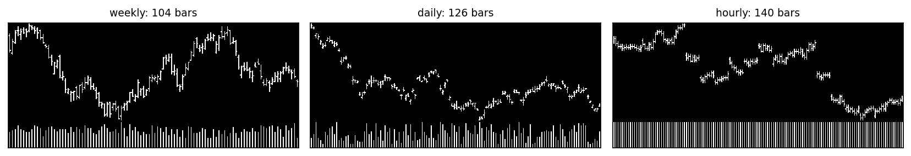
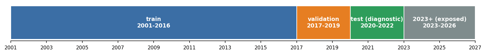
Panel A shows the three images the networks read for one chart set, drawn here from synthetic prices. Each panel is scaled to the window’s own range, so it shows the shape of price moves and not their size. Panel B shows the chronological split. The 2023 onward period plays no role in the 500-stock analysis.
Table I
Summary Statistics by Sample Period
Rows are chart sets for the 500-stock sample after a 20-session purge at each boundary. Mean log vol. is the mean of 20-day log realized volatility, equation (1). O5 is the rate of beating the median stock over five sessions. D10 is the rate of a 10% drawdown within 20 sessions. Weeks is the number of distinct calendar weeks.
| Period | Stock-dates | Stocks | Dates | Weeks | Mean log vol. | O5 rate | D10 rate |
|---|---|---|---|---|---|---|---|
| Train, 2001–2016 | 165,421 | 489 | 3806 | 789 | −2.514 | 0.500 | 0.227 |
| Validation, 2017–2019 | 35,145 | 492 | 734 | 153 | −2.682 | 0.499 | 0.178 |
| Test, 2020–2022 | 35,954 | 500 | 736 | 153 | −2.290 | 0.503 | 0.302 |
Volatility is the log of realized volatility over the next 20 sessions, computed from daily close-to-close returns,
The drawdown event D10 equals one if the lowest low over the next 20 sessions falls at least 10% below the open of session t+1. The direction event O5 equals one if the stock’s five-session total return exceeds the same-date median across eligible stocks in the 979-stock universe, so its base rate is close to one half by construction.
The 33 numeric features use only the last 126 daily bars ending on the decision date, the same window a daily chart displays. Table A.I lists them. They contain the realized and range-based estimators that drive HAR-type forecasts (close-to-close, Parkinson and Garman-Klass volatility at 1, 5 and 22 days, plus an exponentially weighted estimate), so any gain from images is measured against a benchmark that already holds the standard volatility information from daily bars. Missing values take the training-sample median and all features are standardized using training-sample moments.
A deterministic renderer draws each view as a binary image 128 pixels high, using 3 pixels per bar: an open tick, a high-low line and a close tick, with a 100-pixel price panel over a 26-pixel volume panel. Prices are in logs and stretched so that the window’s lowest low sits at the bottom of the panel and its highest high at the top. This scale normalization is a central design choice. A chart cannot show the level of volatility, because a calm stock and a volatile stock with the same path shape produce the same image. Whatever images contribute must come from shape, from the arrangement of moves within the window, and from the pattern of volume.
Before entering a network, each image is replicated across three channels, resized to 224 by 224 pixels with antialiasing and normalized with that network’s pretraining statistics. The network’s output for each of the three views is compressed by principal components to 128 dimensions, fitted on training rows only and retaining 92% to 98% of the variance for frozen networks. Image features are standardized and clipped at ±10 standard deviations. Combined with the 33 numbers this gives 417 inputs. Figure 2 summarizes the pipeline.
Figure 2
Forecasting pipeline
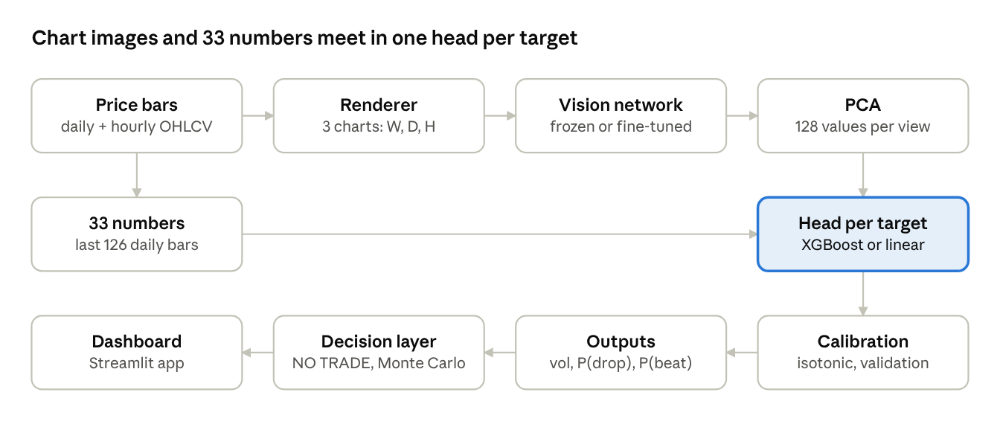
Price bars become three charts and 33 numeric features. A vision network embeds each chart; PCA compresses each embedding; a separate head forecasts each target. Probabilities are calibrated by isotonic regression on the validation years. A decision layer and a Monte Carlo simulator use the outputs.
Figure 3
Market regimes across the sample
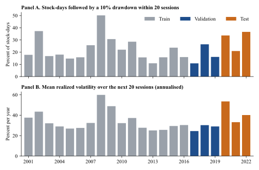
Bars are annual, computed on the 500-stock sample. Grey denotes training years, blue validation years and orange test years.
Table II lists the seven networks, all drawn from the timm library: ResNet-18 (He et al. (2016)), EfficientNet-B0 (Tan and Le (2019)), MobileNetV3-Large (Howard et al. (2019)), ConvNeXt-Tiny (Liu et al. (2022)), ViT-B/16 (Dosovitskiy et al. (2021)), Swin-T (Liu et al. (2021)) and DINOv2 ViT-S/14 (Oquab et al. (2024)). Together they span convolutional and transformer designs, 4 to 86 million parameters, and supervised and self-supervised pretraining. Three ResNet-18s with random weights act as controls: if they matched the pretrained networks, pretraining would be adding nothing.
Table II
Vision Networks
Embedding is the output size per view before PCA to 128. The last column is validation R² for 20-day log volatility using frozen images alone.
| Network | Family | Pretraining data | Params (M) | Embedding | Images-only val. R² |
|---|---|---|---|---|---|
| ViT-B/16 | Transformer | ImageNet-21k, then 1k | 85.8 | 768 | 0.140 |
| ConvNeXt-Tiny | CNN | ImageNet-12k, then 1k | 27.8 | 768 | 0.157 |
| Swin-T | Transformer | ImageNet-1k | 27.5 | 768 | 0.149 |
| DINOv2 ViT-S/14 | Transformer | LVD-142M (self-supervised) | 21.6 | 384 | 0.207 |
| ResNet-18 | CNN | ImageNet-1k | 11.2 | 512 | 0.152 |
| MobileNetV3-Large | CNN | ImageNet-1k | 4.2 | 1280 | 0.122 |
| EfficientNet-B0 | CNN | ImageNet-1k | 4.0 | 1280 | 0.150 |
| ResNet-18 × 3 | Control | None (random weights) | 11.2 | 512 | −0.021 to −0.017 |
Each target has its own head. Ridge regression (17 penalties from 10−2 to 106) and logistic regression (6 penalties from 10−4 to 10) provide linear benchmarks. XGBoost (Chen and Guestrin (2016)) uses four configurations (depth 3 to 7, learning rate 0.05 or 0.10, minimum child weight 100 to 1,000, subsampling 0.8), with up to 2,000 trees and early stopping on validation. Each head is estimated on four input sets: images only, numbers plus all three views, numbers plus one view, and numbers only. Volatility baselines are HAR (Corsi (2009)) with range-based estimators, EWMA, a rolling 22-day estimate, and GARCH(1,1) with Student-t errors estimated stock by stock on pre-2017 returns and held fixed. The notebook skipped GARCH because the raw bars were not available in that environment, so I score it in the supplementary analysis, where it covers 488 stocks and 98.2% of test rows. In all, I logged 1,881 configurations.
Fine-tuning trains each network end to end. One backbone reads all three views, a small head adds the 33 numbers, and the loss combines mean squared error on standardized volatility with cross-entropy on the two binary targets. I use AdamW with a learning rate of 3×10−5 for the backbone and 10−3 for the head, weight decay of 0.05, batches of 64, a short warm-up followed by cosine decay, gradient clipping at 1.0 and mixed precision on one NVIDIA A100. I apply no augmentation, because a flipped or cropped chart depicts a different price history. Each epoch draws a fresh 60,000 of the 141,525 chart sets whose labels end before 2015. Early stopping uses 15,000 rows from 2015 and 2016 with a patience of two epochs and a maximum of eight, so the 2017 to 2019 validation years play no part in fine-tuning. An earlier run of this project had stopped on those years, which flattered its fine-tuning gains. A controlled study then trains only the last 25% or 50% of the two best networks or uses a risk-only loss, and two further seeds measure variation. The 15 runs took 158 GPU-minutes.
The selection rule was fixed in the run’s configuration before test metrics were computed. For each target the best validation score wins (R² for V, log loss for O5, Brier score for D10). A model that uses images wins only if its gain over the best numeric model has a month-block 95% confidence interval excluding zero and a gain of the right sign in each validation year. Thresholds and calibration are also fixed on validation. The run tests three hypotheses:
I add one test after seeing results: whether images improve forecasts within each calendar month. The metric itself was always in the run’s reporting set, as were its values, but no hypothesis was attached to it, and Section V.E treats it accordingly.
Pooled R² compares squared error with that of the evaluation sample’s mean. Within-month R² removes each month’s mean from realized values and from forecasts, allows the best single rescaling of forecasts, and measures fit across stocks only:
where tildes denote deviations from the month mean and b is the pooled slope. To separate the two sources of pooled error, I decompose mean squared error by month m:
The first term is the error in the market-wide level and the second the cross-sectional error. I also report QLIKE (Patton (2011)), computed on the variance scale with a log-normal correction whose variance comes from validation residuals; Spearman rank correlation; Diebold and Mariano (1995) tests on monthly mean squared-error differentials; Mincer and Zarnowitz (1969) regressions; and encompassing regressions in the spirit of Fair and Shiller (1990), with standard errors clustered by month. Binary targets use ROC-AUC, average precision, the Brier skill score against the training base rate (Gneiting and Raftery (2007)), expected calibration error, and precision, recall and F1 at thresholds fixed on validation. Calibration uses isotonic regression (Zadrozny and Elkan (2002), Niculescu-Mizil and Caruana (2005)).
Chart sets overlap in time and share market shocks, so rows are far from independent. All confidence intervals resample whole calendar months (Künsch (1989)), with 1,000 draws and the same resamples for paired comparisons. Effective sample sizes are closer to the 153 test weeks and 36 test months than to the 35,954 test rows. Newey and West (1987) standard errors apply to time series of monthly or weekly statistics.
Fine-tuning raises validation volatility R² in all nine comparisons, significantly in seven (Figure 4). ConvNeXt-Tiny gains most, from 0.561 to 0.592, followed by ViT-B/16 and Swin-T. These gains come under a clean protocol, because validation years played no role in stopping. The study adds a sharper result. Training only the last 25% or 50% of a network yields almost nothing (+0.001 and +0.002), against +0.025 to +0.032 for the same two architectures when fully trained. Adaptation has to reach the early layers, which is plausible given that binary line charts differ sharply from the photographs on which those layers were trained. Three seeds of one study setup differ by a standard deviation of 0.007 in the network’s own validation R², of the same order as some of the differences between networks. Table III reports the details, and Figure A.1 shows the per-epoch learning curves: training loss keeps falling while held-out loss turns up after one to five epochs.
Figure 4
Validation gain from fine-tuning
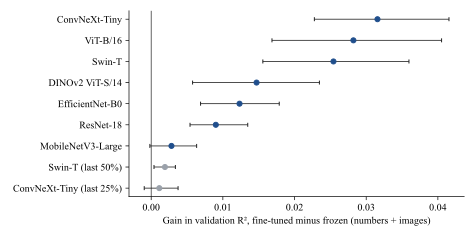
Each point is the gain in validation R² for 20-day log volatility from fine-tuning, using numbers and images with the best head. Whiskers are 95% month-block confidence intervals. Grey points train only the last 25% or 50% of the network.
Table III
Fine-Tuning: Validation Gains
Numbers plus images with the best head on 2017 to 2019. Fine-tuning learned from rows with labels ending before 2015 and stopped on 2015 to 2016. Network’s own R² is the end-to-end network’s forecast without a separate tree head. Numbers alone reach 0.546.
| Model | Frozen R² | Fine-tuned R² | Gain | 95% CI | Network’s own R² | D10 AUC | Best / total epochs | Minutes |
|---|---|---|---|---|---|---|---|---|
| ConvNeXt-Tiny | 0.561 | 0.592 | +0.032 | [0.023, 0.042] | 0.577 | 0.739 | 2 / 4 | 11 |
| ViT-B/16 | 0.558 | 0.586 | +0.028 | [0.017, 0.041] | 0.566 | 0.739 | 1 / 3 | 10 |
| Swin-T | 0.559 | 0.585 | +0.025 | [0.016, 0.036] | 0.577 | 0.737 | 3 / 5 | 16 |
| DINOv2 ViT-S/14 | 0.564 | 0.579 | +0.015 | [0.006, 0.023] | 0.567 | 0.735 | 5 / 7 | 15 |
| EfficientNet-B0 | 0.559 | 0.571 | +0.012 | [0.007, 0.018] | 0.536 | 0.730 | 2 / 4 | 11 |
| ResNet-18 | 0.558 | 0.567 | +0.009 | [0.005, 0.013] | 0.535 | 0.729 | 2 / 4 | 4 |
| MobileNetV3-Large | 0.564 | 0.567 | +0.003 | [−0.000, 0.006] | 0.550 | 0.729 | 3 / 5 | 11 |
| Swin-T (last 50%) | 0.559 | 0.561 | +0.002 | [0.000, 0.003] | 0.547 | 0.729 | 5 / 7 | 13 |
| ConvNeXt-Tiny (last 25%) | 0.561 | 0.562 | +0.001 | [−0.001, 0.004] | 0.547 | 0.727 | 2 / 4 | 5 |
The heads and the networks need separate answers on optimization. Ridge and logistic objectives are convex, so a global minimum can be certified. The ridge gradient at its closed-form solution has norm 6.1×10−16 and five random conjugate-gradient starts reach it; five random L-BFGS starts on the logistic objective agree in loss to 2.5×10−14 (Figure A.2). Boosted trees are built greedily and have no such guarantee, so early stopping keeps the minimum of the validation curve, at 364, 104 and 79 trees for V, O5 and D10 (Figure A.3). Neural networks are not convex, and no available method certifies a global minimum for them. Nor is the global minimum of training loss the goal, since it would memorize the training years. What can be shown is convergence to a stable minimum of held-out loss. For the chosen ConvNeXt-Tiny, training loss falls from 1.461 to 1.311 and held-out loss bottoms at epoch 2 of 4. Following Goodfellow, Vinyals, and Saxe (2015) and Li et al. (2018), Figure A.4 shows that along the straight line from the initial to the trained weights training loss is lowest at the trained point, and that on random planes through the weights the trained network is the lowest point found for both training (1.3658) and validation rows (1.5216).
Figure 5 shows validation scores as the number of training stocks grows. Numeric volatility R² rises from 0.528 with 49 stocks to 0.546 with 489, flattening after roughly 250. On the same test rows as earlier runs, the 500-stock model improves on the 120-stock model by +0.010 in pooled R² (paired CI −0.005 to +0.026) and by +0.009 in within-month R² (CI 0.002 to 0.017). More stocks of the same kind offer limited further gains in these data.
Figure 5
Learning curves in the number of stocks
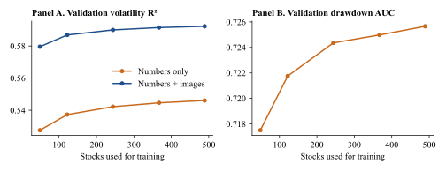
Validation scores for models refitted on nested subsets of training stocks, using the chosen head configuration.
Table IV reports the chosen models. For volatility and drawdown, the rule selects numbers plus images from the fine-tuned ConvNeXt-Tiny; for direction, it keeps numbers alone. H1 is not supported. The gain in test R² is +0.003 (95% CI −0.018 to +0.026; quarter-block CI −0.017 to +0.032), and the gain in direction AUC is −0.002 (CI −0.009 to +0.005). H2 is supported. Ten of 21 network pairs differ after correction, and images alone reach a validation R² of 0.12 to 0.21 against about −0.02 for random weights. H3 is not supported. Restricting direction calls to the most confident 10% raises accuracy by +0.008 (CI −0.005 to +0.019). Controls behave as they should: with shuffled labels, validation R² is −0.123, within-month R² is 0.005 and direction AUC is 0.495.
Table IV
Chosen Models and Pre-Specified Tests
Values come from the frozen run. Confidence intervals resample calendar months 1,000 times. For the volatility rows the numbers column is the XGBoost model on the 33 features. Thresholds for precision, recall and F1 are fixed on validation (0.223 for D10).
| Target / metric | Validation, chosen | Validation, numbers | Test, chosen | Test, numbers |
|---|---|---|---|---|
| Volatility: numbers + fine-tuned ConvNeXt-Tiny, XGBoost | ||||
| R² (test 95% CI [0.246, 0.655]) | 0.592 | 0.546 | 0.503 | 0.500 |
| Within-month R² | 0.597 | 0.559 | 0.572 | 0.554 |
| RMSE | 0.321 | 0.338 | 0.381 | 0.382 |
| MAE | 0.250 | 0.263 | 0.266 | 0.269 |
| Spearman | 0.758 | 0.723 | 0.742 | 0.726 |
| QLIKE | 0.241 | 0.271 | 0.600 | 0.584 |
| Drawdown of 10%: numbers + fine-tuned ConvNeXt-Tiny, XGBoost, calibrated | ||||
| ROC-AUC (test 95% CI [0.589, 0.690]) | 0.740 | 0.726 | 0.648 | 0.653 |
| Precision / recall / F1 | 0.36 / 0.55 / 0.43 | 0.34 / 0.56 / 0.42 | 0.39 / 0.65 / 0.49 | 0.37 / 0.74 / 0.49 |
| Five-day direction: numbers only, XGBoost, calibrated | ||||
| ROC-AUC (test 95% CI [0.500, 0.521]) | 0.516 | 0.514 | 0.510 | 0.510 |
| Pre-specified tests | ||||
| H1, V: gain in test R² | +0.003 | [−0.018, +0.026] | ||
| H1, O5: gain in test AUC | −0.002 | [−0.009, +0.005] | ||
| H2: network pairs differing (Holm) | 10 of 21 | |||
| H3: accuracy gain, top 10% confidence | +0.008 | [−0.005, +0.019] | ||
Table V and Figure 6 compare all volatility forecasters using one consistent set of fits. Machine learning on the 33 numbers improves meaningfully on classical models under squared error. Diebold-Mariano statistics favor numbers over HAR (t = −2.33) and over GARCH (t = −3.70), and the image model over GARCH (t = −2.38). The image model’s pooled R² edge over HAR is not significant on its own (+0.023; CI −0.011 to +0.063; t = −1.46), though its within-month gain over HAR is (+0.044; CI 0.029 to 0.060).
These comparisons depend on the loss function. Under QLIKE, the simple linear models win on test (HAR 0.544, rolling 0.539 and EWMA 0.546 against 0.584 for numbers and 0.600 for the chosen model), reversing the validation ranking. QLIKE punishes under-forecasts heavily, and the machine-learning forecasts under-forecast volatility badly in early 2020, with a mean test error of +0.07 log points for the image model. A user who cares most about avoiding under-forecasts of variance in a crisis would not choose these models on this evidence.
Table V
Volatility Forecasters on the Test Years
All models except the chosen image model are re-fitted in the supplementary analysis with one consistent code path. QLIKE comes from the run where available. The DM t is the Newey-West t-statistic (3 lags) on the monthly mean squared-error difference; negative values favor the image model. The chosen model’s validation score is in Table IV.
| Model | Rows | Val. R² | R² | Within-month R² | RMSE | MAE | Spearman | QLIKE | Images minus model: R² | DM t |
|---|---|---|---|---|---|---|---|---|---|---|
| Numbers + images | 35,954 | – | 0.503 | 0.572 | 0.381 | 0.266 | 0.742 | 0.600 | – | – |
| Numbers only | 35,954 | 0.546 | 0.503 | 0.552 | 0.381 | 0.269 | 0.728 | 0.584 | −0.000 [−0.025, 0.029] | 0.03 |
| Numbers + hourly RV | 35,954 | 0.549 | 0.503 | 0.552 | 0.381 | 0.269 | 0.728 | – | −0.000 [−0.023, 0.027] | 0.03 |
| HAR, hourly RV | 35,954 | 0.438 | 0.472 | 0.499 | 0.393 | 0.284 | 0.708 | – | – | – |
| HAR, daily range | 35,954 | 0.472 | 0.480 | 0.528 | 0.390 | 0.277 | 0.716 | 0.544 | +0.023 [−0.011, 0.063] | −1.46 |
| GARCH(1,1) | 35,314 | – | 0.439 | 0.479 | 0.403 | 0.289 | 0.696 | – | +0.056 [0.008, 0.108] | −2.38 |
| EWMA | 35,954 | 0.415 | 0.450 | 0.490 | 0.401 | 0.289 | 0.694 | 0.545 | – | – |
| Rolling 22-day | 35,954 | 0.352 | 0.423 | 0.445 | 0.411 | 0.300 | 0.675 | 0.539 | – | – |
Figure 6
Volatility forecasters on the test years
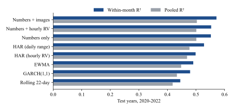
Pooled and within-month R² for 20-day log volatility, 2020 to 2022. GARCH is scored on the 98.2% of rows with enough pre-2017 history.
Table VI applies the decomposition in equation (3). The market-wide level accounts for 38% of the chosen model’s squared error, and for 52% in 2020. Figure 7, Panel A shows why: the monthly level error reaches 1.15 log points in February 2020, the kind of market-wide shock that no stock-level history in the model anticipated. Mincer-Zarnowitz slopes tell the same story, at 0.73 in 2020 against 0.97 in 2021 and 0.90 in 2022 for the image model (Table A.II).
The two models differ in opposite directions in the two components. Images lower cross-sectional mean squared error from 0.0928 to 0.0895 (difference −0.0033; CI −0.0049 to −0.0015), and they raise level error from 0.0523 to 0.0557 (difference +0.0034; CI −0.0030 to +0.0111). The two nearly cancel, which produces the pooled null. Only the first difference is statistically distinguishable from zero. Panels B and C of Figure 7 show the cross-sectional gain month by month: within-month fit is higher in 29 of 36 months, with a mean gain of 1.96 percentage points (Newey-West t = 3.64).
This pattern fits the design of the renderer. Scale-normalized charts cannot display the level of volatility, and images-only models confirm it. On test, their pooled R² ranges from −0.05 to +0.10, yet their within-month R² ranges from 0.10 to 0.20 (Table A.III). The networks do pick up something about which stocks will be more volatile than others in a given month.
Figure 7
Level and cross-sectional forecasts by month
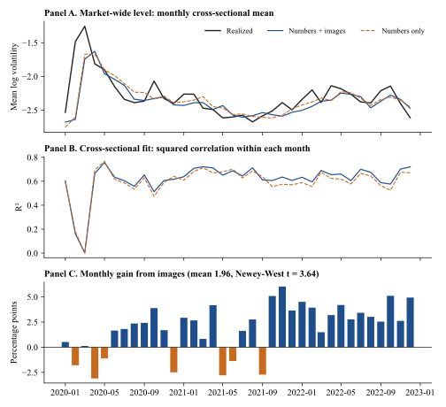
Panel A plots the monthly means of realized and forecast log volatility. Panel B plots the squared correlation between forecasts and outcomes within each month. Panel C plots the difference, images minus numbers.
Table VI
Decomposing Squared Forecast Error
Equation (3). Level is the month-mean component of mean squared error and Cross-section the remainder. Mean error is realized minus forecast log volatility, so positive values are under-forecasts.
| Sample | MSE, images | MSE, numbers | Cross-section, images | Cross-section, numbers | Level, images | Level, numbers | Level share, images | Level share, numbers | Mean error, images | Mean error, numbers |
|---|---|---|---|---|---|---|---|---|---|---|
| All test years | 0.1452 | 0.1452 | 0.0895 | 0.0928 | 0.0557 | 0.0523 | 0.384 | 0.360 | 0.070 | 0.047 |
| 2020 | 0.2648 | 0.2597 | 0.1282 | 0.1287 | 0.1365 | 0.1310 | 0.516 | 0.505 | 0.120 | 0.087 |
| 2021 | 0.0841 | 0.0875 | 0.0728 | 0.0769 | 0.0114 | 0.0106 | 0.135 | 0.121 | 0.013 | −0.003 |
| 2022 | 0.0829 | 0.0844 | 0.0660 | 0.0716 | 0.0169 | 0.0129 | 0.204 | 0.153 | 0.078 | 0.057 |
Figure 8 and Table VII split the sample. The within-month gain is +0.012 in 2020 (CI −0.002 to +0.022), +0.020 in 2021 (CI 0.004 to 0.035) and +0.033 in 2022 (CI 0.027 to 0.039). It takes similar values across terciles of dollar volume, at about +0.02 in each, and for S&P 500 members (+0.028) and non-members (+0.019). So the gain does not come from one regime or from small illiquid stocks. Pooled gains, by contrast, have confidence intervals spanning zero in every split.
Figure 8
Gains from images across subsamples
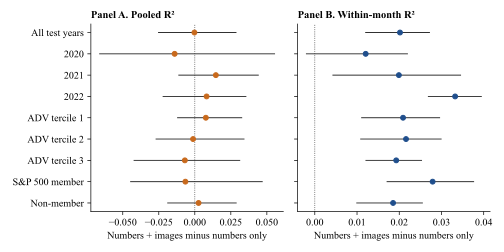
Numbers plus images minus numbers only, with 95% month-block confidence intervals. Liquidity terciles sort on 20-day average dollar volume within each month.
Table VII
Gains from Images by Subsample, Test Years
Numbers plus images minus numbers only, with month-block bootstrap confidence intervals. Liquidity terciles sort on 20-day average dollar volume within each month.
| Subsample | Rows | R², numbers | Gain in R² | 95% CI | Gain in within-month R² | 95% CI |
|---|---|---|---|---|---|---|
| 2020 | – | – | −0.014 | [−0.066, 0.055] | +0.012 | [−0.002, 0.022] |
| 2021 | – | – | +0.015 | [−0.011, 0.044] | +0.020 | [0.004, 0.035] |
| 2022 | – | – | +0.008 | [−0.022, 0.035] | +0.033 | [0.027, 0.039] |
| ADV tercile 1 | 11,995 | 0.486 | +0.008 | [−0.012, 0.033] | +0.021 | [0.011, 0.030] |
| ADV tercile 2 | 11,974 | 0.476 | −0.001 | [−0.027, 0.034] | +0.022 | [0.011, 0.030] |
| ADV tercile 3 | 11,985 | 0.511 | −0.007 | [−0.042, 0.031] | +0.019 | [0.012, 0.025] |
| S&P 500 member | 13,144 | 0.393 | −0.007 | [−0.045, 0.047] | +0.028 | [0.017, 0.038] |
| Non-member | 22,810 | 0.511 | +0.003 | [−0.019, 0.029] | +0.019 | [0.010, 0.025] |
Because this test was not pre-specified, it needs a higher bar. Table VIII collects the stress tests. The gain survives a 99% interval (0.010 to 0.029), which is the Bonferroni interval for the five volatility metrics I compare; quarter-block resampling (0.012 to 0.029); resampling whole stocks (0.016 to 0.024); and narrower week-level cross-sections (+0.019; CI 0.013 to 0.025). It also survives removing stock fixed effects along with month effects (from 0.064 to 0.079; difference CI 0.005 to 0.027), which indicates that the networks are not simply recognizing persistent stock identities. All 16 image models beat numbers alone on test within-month R² (0.561 to 0.572 against 0.554), and all 14 did in the separate 120-stock run, although that sample is nested in this one and so is not independent. In encompassing regressions with month fixed effects, the image forecast carries a coefficient of 0.65 (t = 16.0) alongside 0.27 (t = 4.6) for the numeric forecast (Table IX). The gain on validation was +0.037, about twice its test value.
Several reasons for caution remain. I searched for this pattern after seeing that the pooled test failed, on years that earlier runs had read. A placebo was only partly available: on validation, a random-weight network adds +0.001 within months, but random-weight models were not scored on the test years, and on validation their images-only within-month R² of about 0.08 is above zero, so some cross-sectional information is available to any encoding of a chart. Survivorship could affect cross-sectional spreads. In economic terms, a 3.6% reduction in cross-sectional squared error is modest. The result is therefore best read as a well-supported hypothesis for a fresh test on data after October 2026, with a specification given in the conclusion.
Table VIII
Stress Tests of the Within-Month Gain
Images is the chosen run’s saved forecast. Numbers is the replicated XGBoost model on 33 features. Fixed-effects R² demeans outcomes and forecasts by month and by stock. In the run’s own numbers-only fit, the within-month gain is +0.018 (0.572 against 0.554). Test years 2020 to 2022; this analysis was not pre-specified.
| Test | Images | Numbers | Gain | Interval |
|---|---|---|---|---|
| Within-month R², month blocks, 95% | 0.572 | 0.552 | +0.020 | [0.012, 0.027] |
| Same, 99% (Bonferroni, five metrics) | [0.010, 0.029] | |||
| Same, quarter blocks, 95% | [0.012, 0.029] | |||
| Same, resampling whole stocks, 95% | [0.016, 0.024] | |||
| Within-week R², 95% | 0.644 | 0.625 | +0.019 | [0.013, 0.025] |
| R² with month and stock fixed effects, 95% | 0.079 | 0.064 | +0.015 | [0.005, 0.027] |
| Cross-sectional MSE, 95% | 0.0895 | 0.0928 | −0.0033 | [−0.0049, −0.0015] |
| Level MSE, 95% | 0.0557 | 0.0523 | +0.0034 | [−0.0030, 0.0111] |
| Mean monthly cross-sectional R² | 0.614 | 0.595 | +0.020 | t = 3.64; 81% of months positive |
| Other paired metrics: Spearman | +0.014 | [−0.000, 0.029] | ||
| Other paired metrics: MAE | −0.003 | [−0.010, 0.003] | ||
| Other paired metrics: pooled R² | −0.000 | [−0.025, 0.029] |
Figure 9 suggests a mechanism. On validation, the hourly chart gives the largest single-view gain in all seven networks, and hourly bars are the one source of information the numeric features lack. If images are mainly a roundabout way of measuring intraday volatility, then adding intraday volatility to the numbers should absorb the gain.
It does not. I add six hourly measures to the numeric model: realized volatility at 1, 5 and 20 sessions, overnight volatility, the largest absolute hourly return, and the intraday share of variance. They are computed strictly from bars up to the decision date and lie within the chart’s own window. Validation R² rises by only 0.002 (from 0.5464 to 0.5487). On test the change is +0.0001 in pooled R² (CI −0.0049 to +0.0044) and +0.0003 in within-month R² (CI −0.0019 to +0.0028). A textbook HAR on hourly realized variance (0.472) does worse than HAR on daily range-based estimators (0.480), which suggests that range estimators already capture most of what hourly bars offer at a 20-day horizon. The image forecast retains its full encompassing coefficient after controlling for these features (0.65; t = 16.7). This analysis rules out one explanation without identifying the true source. Natural candidates are the shape of volume, the clustering of moves within the window and the position of recent bars relative to the range, which a saliency or feature-attribution study could investigate.
Figure 9
Validation gain by chart view
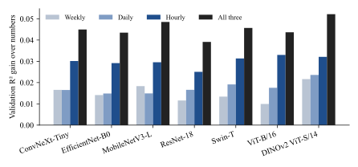
Gain in validation R² over numbers alone from adding one view or all three, using linear heads with frozen features.
Table IX
Encompassing Regressions of Realized Log Volatility on Pairs of Forecasts
OLS on test rows, 2020 to 2022, with standard errors clustered by month. Month-fixed-effects columns demean outcomes and forecasts by month.
| Forecast 1 | Forecast 2 | b1 | t | b2 | t | R² | With month FE: b1 | t | b2 | t | R² |
|---|---|---|---|---|---|---|---|---|---|---|---|
| Numbers + images | Numbers only | 0.579 | 5.0 | 0.325 | 2.8 | 0.533 | 0.651 | 16.0 | 0.272 | 4.6 | 0.576 |
| Numbers + hourly RV | Numbers only | 0.614 | 2.6 | 0.281 | 1.4 | 0.519 | 0.493 | 3.5 | 0.437 | 4.3 | 0.553 |
| Numbers + images | Numbers + hourly RV | 0.564 | 4.8 | 0.338 | 2.8 | 0.534 | 0.650 | 16.7 | 0.272 | 4.1 | 0.576 |
Figure 10 plots validation against test scores for the 16 image candidates. Validation R² ranges over 0.035 and test R² over 0.012, and the rank correlation is −0.61 for volatility and −0.47 for drawdown. Fine-tuning raises mean validation R² by 0.014 and lowers mean test R² by 0.004. Frozen networks occupy the top three places on test. The rule did what it was designed to do, and yet its choice proved no better than the alternatives on pooled R². The evidence is consistent with Kumar et al. (2022), whose fine-tuned models lose ground under distribution shift, though this design cannot separate that account from regime change or selection noise. Each of those would affect a single validation window. The practical lesson is that a selection rule based on one calm three-year window gives weak guidance for a turbulent one.
Figure 10
Validation and test scores across candidate models
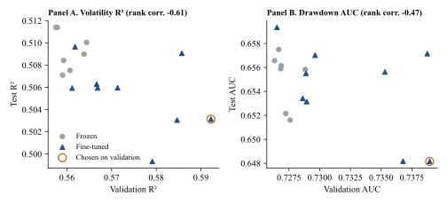
Each point is one of 16 candidates using numbers and images with the best head. The ring marks the model chosen on validation.
Table X reports drawdown results, and Figure 11 shows the evaluation curves. AUC is 0.648 with images and 0.653 for numbers in the run, and the paired difference in my replication is −0.008 (CI −0.025 to +0.009). The within-month difference is also insignificant (−0.008; CI −0.021 to +0.003), so images show no cross-sectional gain for this target. At the validation threshold, the model catches 65% of drawdowns with 39% precision, against a base rate of 30%. By year, AUC is 0.575 in 2020, 0.735 in 2021 and 0.625 in 2022. Calibration deteriorates relative to numbers alone (expected calibration error 0.058 against 0.038; Brier skill score 0.046 against 0.080), largely because isotonic calibration on a calm validation sample cannot anticipate a base rate that rises from 17.8% to 30.2%. Accuracy would mislead here, since always predicting no drawdown is right 70% of the time.
Table X
Drawdown Forecasts on the Test Years
Replicated numeric fits against the run’s saved image forecasts. Run values for uncalibrated image and numeric models respectively: average precision 0.427 and 0.454 (base rate 0.302), Brier skill 0.048 and 0.080, calibration error 0.067 and 0.038; the calibrated image model has Brier skill 0.046 and calibration error 0.058.
| Model | AUC | Within-month AUC | AUC 2020 | AUC 2021 | AUC 2022 | Gain over numbers: AUC | Gain: within-month AUC |
|---|---|---|---|---|---|---|---|
| Numbers + images | 0.648 | 0.684 | 0.575 | 0.735 | 0.625 | −0.008 [−0.025, 0.009] | −0.008 [−0.021, 0.003] |
| Numbers only | 0.656 | 0.692 | 0.591 | 0.734 | 0.635 | – | – |
| Numbers + hourly RV | 0.657 | 0.692 | 0.594 | 0.733 | 0.637 | +0.002 [−0.001, 0.004] | −0.000 [−0.002, 0.001] |
Figure 11
Drawdown model evaluation
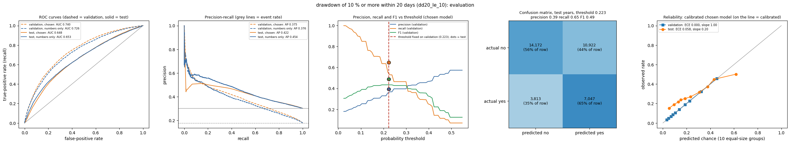
ROC and precision-recall curves, precision, recall and F1 against the threshold, the test-year confusion matrix and the reliability plot. Dashed lines are validation and solid lines are test.
Five-day direction shows no reliable signal. Test AUC is 0.510 (CI 0.500 to 0.521), and images do not help. The Brier skill score is negative (−0.001). A separate experiment that fits the continuous excess return and scores weekly rankings gives a rank information coefficient of 0.003 (Newey-West t = 0.34), with a top-minus-bottom decile spread of 0.01% over five days before costs. The binary model’s rank coefficient of 0.019 (t = 1.79) has a negative decile spread of −0.11%. The F1 of 0.67 at recall of 1.00 merely reflects the fact that the F1-maximizing threshold flags nearly every stock when there is no signal. These results do not contradict Jiang, Kelly, and Xiu (2023), who use a far larger CRSP sample and networks trained from scratch on returns. They show only that this design finds no five-day edge. Figure A.6 shows the time series of the coefficient.
Table XI and Figure 12 sort stocks into deciles of predicted volatility within each month. Realized volatility rises from 25% to 80% a year, a ratio of 3.2, and the rate of 10% drawdowns from 15% to 59%. Predicted volatility sits below realized volatility in every decile, reflecting the upward surprise of the test years. Forecasts therefore have clear use for ranking risk, even though they under-forecast its level. Figure 13 shows the standard evaluation plots for the volatility model.
Figure 12
Realized risk by decile of predicted volatility
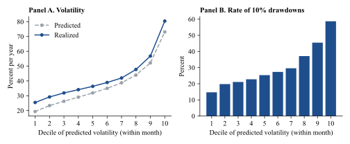
Deciles form within each calendar month on the chosen model’s forecast, using test years 2020 to 2022.
Table XI
Stocks Sorted on Predicted Volatility, Test Years
Deciles form within each calendar month on the chosen model’s forecast. Volatility is annualized. Returns include dividends, are gross of costs and come from surviving stocks only. The high-minus-low mean 20-day return is 4.46% (Newey-West t = 1.79).
| Decile | Rows | Predicted vol. | Realized vol. | 10% drawdown rate | Mean 20-day return |
|---|---|---|---|---|---|
| 1 (low) | 3,610 | 19.3% | 25.5% | 14.7% | −0.32% |
| 2 | 3,594 | 23.4% | 29.2% | 19.8% | −0.22% |
| 3 | 3,591 | 26.3% | 31.9% | 21.1% | 0.17% |
| 4 | 3,593 | 29.1% | 34.1% | 22.8% | 0.80% |
| 5 | 3,598 | 31.9% | 36.4% | 25.3% | 0.83% |
| 6 | 3,586 | 35.0% | 39.0% | 27.4% | 1.25% |
| 7 | 3,590 | 38.8% | 42.0% | 29.6% | 1.70% |
| 8 | 3,594 | 44.0% | 47.8% | 37.1% | 1.68% |
| 9 | 3,591 | 52.2% | 56.8% | 45.5% | 2.21% |
| 10 (high) | 3,607 | 73.1% | 80.4% | 58.7% | 4.12% |
Figure 13
Volatility model evaluation
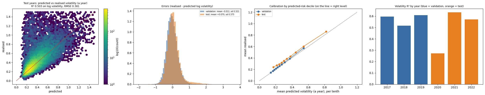
Predicted against realized volatility, the distribution of errors, calibration by decile of predicted risk, and pooled R² by year. Blue denotes validation years and orange denotes test years.
The decision layer flags a stock as high risk when predicted volatility reaches 33.6% a year or the calibrated drawdown probability reaches 30.3%, each set at the 80th percentile of validation readings. On test it flags 48.3% of cases, far above the intended 20%, which again reflects the shift in regime. Flagged cases have realized volatility of 55.7% against 29.8% and 10% drawdown rates of 40.1% against 21.0%.
A flag that sorts risk need not improve returns, and Table XII shows that it does not. An equal-weighted monthly series that holds only unflagged stocks has lower volatility per 20-day period (5.8% against 7.5% for flagged stocks) but a lower mean return (−0.41% against +1.51%; difference t = −1.80). Its worst month is only modestly better (−23.3% against −26.3%). The high-minus-low decile return of +4.5% per 20 days (t = 1.79) runs counter to the low-volatility literature (Ang et al. (2006)), which I attribute mainly to this sample: only survivors are present, and the test years include a sharp rebound. These series are gross of costs and are not a strategy test. I draw two conclusions from them: the flag measures risk and offers no evidence of timing ability, and it gives little protection in a market-wide crash.
Table XII
Equal-Weighted Monthly Series by Risk Flag, Test Years
Each month averages the forward 20-session total return of rows dated in that month, so periods overlap slightly. Not a tradable strategy: gross of costs and limited to surviving stocks. Unflagged minus flagged: −1.92% (Newey-West t = −1.80). Flag rate 48.3%.
| Series | Mean 20-day return | Std. dev. | Annualized ratio | Worst month | Months below −10% |
|---|---|---|---|---|---|
| All stocks | 1.11% | 6.09% | 0.65 | −24.0% | 1 of 36 |
| Unflagged | −0.41% | 5.83% | −0.25 | −23.3% | 2 of 36 |
| Flagged | 1.51% | 7.48% | 0.72 | −26.3% | 1 of 36 |
Volatility forecasts can also generate distributions of future prices. For each stock I simulate 20-day paths with no drift, drawing volatility from the forecast and its validation error, using Student-t shocks with five degrees of freedom (chosen on validation from six candidates) and intraday lows scaled by a range factor of 1.25. A minimum-relative-entropy reweighting keeps the mean return unchanged and matches the probability of touching a 10% drawdown to the calibrated drawdown model. On test, the 90% band holds 88.4% of realized outcomes and the 50% band holds 48.7%, against 90.9% and 50.8% on validation. Table XIII shows that coverage varies by predicted risk (82% in the lowest decile and 93% in the highest) and by year (86% in 2020). The simulated drawdown probability understates risk for low-risk stocks and overstates it for high-risk ones. Figure 14 presents the calibration.
Table XIII
Monte Carlo Coverage on the Test Years
Raw simulation with no drift, Student-t shocks with five degrees of freedom and a range factor of 1.25, both chosen on validation. A well-calibrated 90% band holds 0.90.
| Group | Rows | 90% band holds | 50% band holds | Median width of 90% band | Realized drawdown rate | Simulated drawdown rate |
|---|---|---|---|---|---|---|
| Predicted-volatility decile 1 | 3,596 | 0.823 | 0.424 | 0.174 | 0.157 | 0.056 |
| Predicted-volatility decile 2 | 3,595 | 0.861 | 0.455 | 0.213 | 0.182 | 0.106 |
| Predicted-volatility decile 3 | 3,595 | 0.883 | 0.479 | 0.243 | 0.204 | 0.147 |
| Predicted-volatility decile 4 | 3,596 | 0.894 | 0.501 | 0.271 | 0.223 | 0.185 |
| Predicted-volatility decile 5 | 3,595 | 0.890 | 0.491 | 0.300 | 0.256 | 0.228 |
| Predicted-volatility decile 6 | 3,595 | 0.902 | 0.489 | 0.335 | 0.287 | 0.274 |
| Predicted-volatility decile 7 | 3,596 | 0.898 | 0.510 | 0.379 | 0.318 | 0.330 |
| Predicted-volatility decile 8 | 3,595 | 0.905 | 0.512 | 0.445 | 0.391 | 0.403 |
| Predicted-volatility decile 9 | 3,595 | 0.898 | 0.534 | 0.540 | 0.448 | 0.488 |
| Predicted-volatility decile 10 | 3,596 | 0.932 | 0.557 | 0.769 | 0.555 | 0.634 |
| Year 2020 | 12,240 | 0.857 | 0.497 | 0.371 | 0.337 | 0.345 |
| Year 2021 | 12,380 | 0.918 | 0.516 | 0.274 | 0.209 | 0.227 |
| Year 2022 | 11,334 | 0.890 | 0.471 | 0.321 | 0.366 | 0.284 |
Figure 14
Monte Carlo calibration
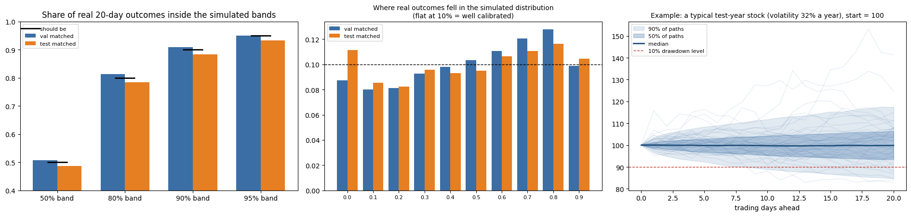
Share of realized 20-day outcomes within simulated bands, the probability integral transform, and one example fan of paths.
Survivorship. Only stocks that still trade are in the sample. Firms that later failed had volatility and drawdowns that these models never see, so reported risk levels are probably understated, as are the true tails of the highest risk deciles. Return statistics are especially affected, since the survivors include all the high-volatility stocks that recovered. The effect on the comparison of images with numbers is less clear, because both models face the same sample, but it is not safe to assume it is zero.
Use of the evaluation data. The project has three runs, on 60, 120 and 500 stocks. Earlier runs read the 2020 to 2022 years, and their results shaped later decisions such as the larger sample and the fine-tuning fix. The 2023 onward holdout was opened once each for the 60-stock and 120-stock configurations, as Table XIV records, before the 500-stock design was final. No 500-stock model has been scored on it. No selection in this run used the test years, but the process as a whole was not blind to them. Harvey (2017) and Bailey et al. (2017) describe the resulting risk, and I do not claim that the reported confidence intervals fully account for it.
Table XIV
Earlier Runs on the 2023 Onward Holdout
Each configuration was opened once, on 19 and 20 October 2026, using the configuration chosen by that run. The 60-stock model uses Swin-T frozen features, and the 120-stock model a fine-tuned ViT-B/16. These are smaller samples than the main analysis, and neither is the 500-stock model. Drawdown labels were not scored. Numeric benchmarks were not scored, so no image test is available on this period.
| Run | Rows | Volatility R² [95% CI] | Within-month R² | R², to Feb. 2026 | R², after Feb. 2026 | Direction AUC [95% CI] |
|---|---|---|---|---|---|---|
| 60 stocks | 5524 | 0.550 [0.508, 0.588] | 0.577 | 0.535 | 0.613 | 0.490 [0.474, 0.505] |
| 120 stocks | 10911 | 0.584 [0.549, 0.615] | 0.600 | 0.572 | 0.637 | 0.508 [0.498, 0.518] |
Multiple testing. I logged 1,881 configurations, and validation selection operates across them. Reported intervals condition on the chosen model. The evidence that validation rankings do not carry over (Section V.G) shows that this risk is real here.
Data quality. The price data come from one non-academic lineage with no declared license, and they are not CRSP or TAQ. Volume is about 90% of consolidated volume in the Finnhub-built period. There are no earnings dates, spreads or shares outstanding. Independent checks against Yahoo Finance are reassuring on price but are not the same as validation against a research-grade source.
Sensitivity. Local re-fits of the numeric model on a different machine and XGBoost version replicate the run closely (Table A.IV) but not exactly: numeric test R² is 0.503 locally against 0.500 in the run. Noise of 0.003 from fitting alone equals the H1 point estimate. This is another reason to read the pooled result as a null. Removing the 2001 to 2009 rows from training barely changes test scores (R² 0.501 against 0.503).
Sample size. Three test years contain one large crisis. Twenty-two years of chart sets yield 153 test weeks and 36 test months, so a single event dominates pooled statistics, as the 2020 results show.
Pictures of price charts do not improve pooled forecasts of stock volatility once standard numeric features are in the model, in this sample of 500 surviving US stocks. They do not improve drawdown ranking, and neither they nor numbers forecast five-day direction. Yet pooled evaluation hides a further result. Images appear to carry cross-sectional information about which stocks will be more volatile within a month. That gain persists across the years, networks, liquidity groups and resampling schemes I can examine, and hourly realized volatility does not account for it. It is offset in pooled measures by imprecise forecasts of the market-wide level, which no model here predicts well in a crisis.
Two practical implications follow. Researchers comparing panel forecasts should report level and cross-sectional skill separately, since a pooled metric can conceal the difference, and a validation window without a crisis gives weak guidance for selecting among models that will face one. Practitioners should treat machine forecasts of this kind as tools for ranking risk, and should not rely on them for the level of risk in a market-wide shock.
The clearest next step is a confirmatory test. I propose the following specification for data after October 2026, on a universe that includes delisted firms if possible: the chosen model and numeric benchmark frozen as of this draft; within-month R² for 20-day log volatility as the primary metric; a month-block bootstrap; and a one-sided test of a positive gain. Further work should use a research-grade data source, evaluate model selection across walk-forward windows that include 2008 and 2020, score the random-weight controls on the evaluation years, and use attribution methods to learn what the networks are reading.
All code, the notebooks with their outputs, aggregate result files, the configuration ledger and the scripts behind every table and figure in this paper are public at github.com/harshatangirala/triframe-cv. Raw prices, rendered charts, features, row-level predictions and trained weights are not redistributed, because the source data declare no license. The data card in the repository documents their construction, and the source data set is public on Hugging Face.
Andersen, Torben G., Tim Bollerslev, Francis X. Diebold, and Paul Labys, 2003, Modeling and forecasting realized volatility, Econometrica 71, 579–625.
Ang, Andrew, Robert J. Hodrick, Yuhang Xing, and Xiaoyan Zhang, 2006, The cross-section of volatility and expected returns, Journal of Finance 61, 259–299.
Avramov, Doron, Si Cheng, and Lior Metzker, 2023, Machine learning vs. economic restrictions: Evidence from stock return predictability, Management Science 69, 2587–2619.
Bailey, David H., Jonathan M. Borwein, Marcos López de Prado, and Qiji Jim Zhu, 2017, The probability of backtest overfitting, Journal of Computational Finance 20, 39–69.
Bollerslev, Tim, 1986, Generalized autoregressive conditional heteroskedasticity, Journal of Econometrics 31, 307–327.
Bollerslev, Tim, Benjamin Hood, John Huss, and Lasse Heje Pedersen, 2018, Risk everywhere: Modeling and managing volatility, Review of Financial Studies 31, 2729–2773.
Brown, Stephen J., William Goetzmann, Roger G. Ibbotson, and Stephen A. Ross, 1992, Survivorship bias in performance studies, Review of Financial Studies 5, 553–580.
Byun, Jun Young, Yosep Na, and Jae Wook Song, 2026, From vision to value: Stock chart image-driven factors and their pricing power, Finance Research Letters 92, 109585.
Chen, Tianqi, and Carlos Guestrin, 2016, XGBoost: A scalable tree boosting system, Proceedings of the 22nd ACM SIGKDD International Conference on Knowledge Discovery and Data Mining, 785–794.
Christensen, Kim, Mathias Siggaard, and Bezirgen Veliyev, 2023, A machine learning approach to volatility forecasting, Journal of Financial Econometrics 21, 1680–1727.
Conrad, Jennifer, and Gautam Kaul, 1998, An anatomy of trading strategies, Review of Financial Studies 11, 489–519.
Corsi, Fulvio, 2009, A simple approximate long-memory model of realized volatility, Journal of Financial Econometrics 7, 174–196.
Diebold, Francis X., and Roberto S. Mariano, 1995, Comparing predictive accuracy, Journal of Business & Economic Statistics 13, 253–263.
Dosovitskiy, Alexey, Lucas Beyer, Alexander Kolesnikov, et al., 2021, An image is worth 16x16 words: Transformers for image recognition at scale, International Conference on Learning Representations.
Fair, Ray C., and Robert J. Shiller, 1990, Comparing information in forecasts from econometric models, American Economic Review 80, 375–389.
Fleming, Jeff, Chris Kirby, and Barbara Ostdiek, 2001, The economic value of volatility timing, Journal of Finance 56, 329–352.
Garman, Mark B., and Michael J. Klass, 1980, On the estimation of security price volatilities from historical data, Journal of Business 53, 67–78.
Gneiting, Tilmann, and Adrian E. Raftery, 2007, Strictly proper scoring rules, prediction, and estimation, Journal of the American Statistical Association 102, 359–378.
Goodfellow, Ian J., Oriol Vinyals, and Andrew M. Saxe, 2015, Qualitatively characterizing neural network optimization problems, International Conference on Learning Representations.
Gu, Shihao, Bryan Kelly, and Dacheng Xiu, 2020, Empirical asset pricing via machine learning, Review of Financial Studies 33, 2223–2273.
Hamill, Thomas M., and Josip Juras, 2006, Measuring forecast skill: Is it real skill or is it the varying climatology? Quarterly Journal of the Royal Meteorological Society 132, 2905–2923.
Hansen, Peter R., and Asger Lunde, 2005, A forecast comparison of volatility models: Does anything beat a GARCH(1,1)? Journal of Applied Econometrics 20, 873–889.
Harvey, Campbell R., 2017, Presidential address: The scientific outlook in financial economics, Journal of Finance 72, 1399–1440.
Harvey, Campbell R., Yan Liu, and Heqing Zhu, 2016, ...and the cross-section of expected returns, Review of Financial Studies 29, 5–68.
He, Kaiming, Xiangyu Zhang, Shaoqing Ren, and Jian Sun, 2016, Deep residual learning for image recognition, IEEE Conference on Computer Vision and Pattern Recognition, 770–778.
Holm, Sture, 1979, A simple sequentially rejective multiple test procedure, Scandinavian Journal of Statistics 6, 65–70.
Howard, Andrew, Mark Sandler, et al., 2019, Searching for MobileNetV3, IEEE/CVF International Conference on Computer Vision, 1314–1324.
Jiang, Jingwen, Bryan Kelly, and Dacheng Xiu, 2023, (Re-)Imag(in)ing price trends, Journal of Finance 78, 3193–3249.
Kornblith, Simon, Jonathon Shlens, and Quoc V. Le, 2019, Do better ImageNet models transfer better? IEEE/CVF Conference on Computer Vision and Pattern Recognition, 2656–2666.
Kumar, Ananya, Aditi Raghunathan, Robbie Jones, Tengyu Ma, and Percy Liang, 2022, Fine-tuning can distort pretrained features and underperform out-of-distribution, International Conference on Learning Representations.
Künsch, Hans R., 1989, The jackknife and the bootstrap for general stationary observations, Annals of Statistics 17, 1217–1241.
Lensky, Artem, and Mingyu Hao, 2023, Learning to predict short-term volatility with order flow image representation, Working paper, arXiv:2304.02472.
Li, Hao, Zheng Xu, Gavin Taylor, Christoph Studer, and Tom Goldstein, 2018, Visualizing the loss landscape of neural nets, Advances in Neural Information Processing Systems 31.
Liu, Ze, Yutong Lin, Yue Cao, et al., 2021, Swin Transformer: Hierarchical vision transformer using shifted windows, IEEE/CVF International Conference on Computer Vision, 9992–10002.
Liu, Zhuang, Hanzi Mao, Chao-Yuan Wu, Christoph Feichtenhofer, Trevor Darrell, and Saining Xie, 2022, A ConvNet for the 2020s, IEEE/CVF Conference on Computer Vision and Pattern Recognition, 11966–11976.
Lo, Andrew W., Harry Mamaysky, and Jiang Wang, 2000, Foundations of technical analysis: Computational algorithms, statistical inference, and empirical implementation, Journal of Finance 55, 1705–1765.
Mincer, Jacob A., and Victor Zarnowitz, 1969, The evaluation of economic forecasts, in Jacob A. Mincer, ed.: Economic Forecasts and Expectations (National Bureau of Economic Research, New York), 3–46.
Moreira, Alan, and Tyler Muir, 2017, Volatility-managed portfolios, Journal of Finance 72, 1611–1644.
Murray, Scott, Yusen Xia, and Houping Xiao, 2024, Charting by machines, Journal of Financial Economics 153, 103791.
Newey, Whitney K., and Kenneth D. West, 1987, A simple, positive semi-definite, heteroskedasticity and autocorrelation consistent covariance matrix, Econometrica 55, 703–708.
Niculescu-Mizil, Alexandru, and Rich Caruana, 2005, Predicting good probabilities with supervised learning, Proceedings of the 22nd International Conference on Machine Learning, 625–632.
Obaid, Khaled, and Kuntara Pukthuanthong, 2022, A picture is worth a thousand words: Measuring investor sentiment by combining machine learning and photos from news, Journal of Financial Economics 144, 273–297.
Oquab, Maxime, Timothée Darcet, Théo Moutakanni, et al., 2024, DINOv2: Learning robust visual features without supervision, Transactions on Machine Learning Research.
Parkinson, Michael, 1980, The extreme value method for estimating the variance of the rate of return, Journal of Business 53, 61–65.
Patton, Andrew J., 2011, Volatility forecast comparison using imperfect volatility proxies, Journal of Econometrics 160, 246–256.
Sezer, Omer Berat, and Ahmet Murat Ozbayoglu, 2018, Algorithmic financial trading with deep convolutional neural networks: Time series to image conversion approach, Applied Soft Computing 70, 525–538.
Shumway, Tyler, 1997, The delisting bias in CRSP data, Journal of Finance 52, 327–340.
Tan, Mingxing, and Quoc V. Le, 2019, EfficientNet: Rethinking model scaling for convolutional neural networks, Proceedings of the 36th International Conference on Machine Learning, 6105–6114.
Wooh, Myungjin, and Poongjin Cho, 2025, Integrating vision transformer and time-frequency analysis for stock volatility prediction, Mathematics 13, 3787.
Yosinski, Jason, Jeff Clune, Yoshua Bengio, and Hod Lipson, 2014, How transferable are features in deep neural networks? Advances in Neural Information Processing Systems 27.
Zadrozny, Bianca, and Charles Elkan, 2002, Transforming classifier scores into accurate multiclass probability estimates, Proceedings of the Eighth ACM SIGKDD International Conference on Knowledge Discovery and Data Mining, 694–699.
Table A.I
The 33 Numeric Features
All are functions of the last 126 daily bars ending on the decision date. Mean dollar volume is excluded from the model because a chart’s volume axis has no units.
| Group | Features |
|---|---|
| Returns | 1-, 5- and 21-day return; overnight and intraday return over 21 days; latest gap |
| Volume | Abnormal volume; five-day volume surge |
| Position and mean reversion | Five-day close location; position in 20-day range; 20-day z-score; distance in ATR units; RSI(2), RSI(3), RSI(14, Cutler); down and up streaks; five-day variance ratio; 63-day first-order autocorrelation; 20-day trend z-score |
| Volatility (logs) | Close-to-close, Parkinson and Garman-Klass at 1, 5 and 22 bars; exponentially weighted over the window |
| Amplitude | ATR as a percentage of price; log range of the window; largest drawdown in the window |
Table A.II
Mincer-Zarnowitz Regressions, Test Years
Realized log volatility regressed on the forecast, with standard errors clustered by month. An unbiased forecast has an intercept of zero and a slope of one.
| Model | Sample | Intercept | (s.e.) | Slope | (s.e.) | R² |
|---|---|---|---|---|---|---|
| Numbers + images | all | −0.202 | (0.117) | 0.885 | (0.056) | 0.529 |
| Numbers + images | 2020 | −0.469 | (0.283) | 0.733 | (0.156) | 0.359 |
| Numbers + images | 2021 | −0.073 | (0.074) | 0.966 | (0.024) | 0.635 |
| Numbers + images | 2022 | −0.151 | (0.046) | 0.903 | (0.024) | 0.609 |
| Numbers only | all | −0.194 | (0.109) | 0.897 | (0.055) | 0.518 |
| Numbers only | 2020 | −0.480 | (0.274) | 0.739 | (0.155) | 0.350 |
| Numbers only | 2021 | −0.056 | (0.086) | 0.979 | (0.033) | 0.619 |
| Numbers only | 2022 | −0.089 | (0.057) | 0.938 | (0.027) | 0.582 |
| HAR, daily range | all | −0.152 | (0.118) | 0.905 | (0.056) | 0.504 |
| HAR, daily range | 2020 | −0.447 | (0.264) | 0.742 | (0.145) | 0.355 |
| HAR, daily range | 2021 | −0.048 | (0.071) | 0.976 | (0.027) | 0.601 |
| HAR, daily range | 2022 | 0.014 | (0.051) | 0.971 | (0.028) | 0.544 |
Table A.III
Images Alone: Volatility Forecasts
No numeric features enter these models. The random-weight controls reach validation R² of about −0.02 and within-month R² of about 0.08; they were not scored on test years.
| Model | Validation R² | Validation within-month R² | Test R² | Test within-month R² |
|---|---|---|---|---|
| ConvNeXt-Tiny (fine-tuned) | 0.239 | 0.241 | 0.083 | 0.201 |
| ViT-B/16 (fine-tuned) | 0.222 | 0.232 | 0.097 | 0.200 |
| Swin-T (fine-tuned) | 0.235 | 0.242 | 0.074 | 0.192 |
| DINOv2 ViT-S/14 | 0.207 | 0.227 | 0.058 | 0.173 |
| ViT-B/16 | 0.140 | 0.164 | 0.009 | 0.162 |
| ResNet-18 (fine-tuned) | 0.154 | 0.197 | 0.004 | 0.160 |
| ResNet-18 | 0.152 | 0.191 | 0.010 | 0.154 |
| EfficientNet-B0 (fine-tuned) | 0.180 | 0.209 | 0.012 | 0.154 |
| MobileNetV3-Large (fine-tuned) | 0.155 | 0.198 | 0.031 | 0.148 |
| ConvNeXt-Tiny (fine-tuned, last 25%) | 0.184 | 0.192 | 0.012 | 0.143 |
| DINOv2 ViT-S/14 (fine-tuned) | 0.145 | 0.176 | −0.021 | 0.134 |
| ConvNeXt-Tiny | 0.157 | 0.170 | −0.016 | 0.126 |
| EfficientNet-B0 | 0.150 | 0.167 | 0.017 | 0.125 |
| MobileNetV3-Large | 0.122 | 0.150 | 0.003 | 0.118 |
| Swin-T | 0.149 | 0.166 | −0.048 | 0.104 |
| Swin-T (fine-tuned, last 50%) | 0.166 | 0.178 | −0.044 | 0.103 |
Table A.IV
Replication of the Run
The supplementary analysis re-fits with XGBoost 3.4.1 on CPU and uses OLS where the notebook uses lightly penalized ridge.
| Quantity | Run (GPU notebook) | Supplementary (CPU re-fit) |
|---|---|---|
| Numbers, V, validation R² | 0.5461 | 0.5464 |
| Numbers, V, test R² | 0.5004 | 0.5034 |
| Numbers, D10, validation AUC | 0.7257 | 0.7257 |
| Numbers, D10, test AUC | 0.6533 | 0.6556 |
| HAR, test R² | 0.4776 | 0.4800 |
| EWMA, test R² | 0.4484 | 0.4503 |
| Rolling 22-day, test R² | 0.4161 | 0.4227 |
| Image model, V, test R² (saved forecasts) | 0.5031 | 0.5031 |
| Image model, D10, test AUC (saved forecasts) | 0.6477 | 0.6477 |
Figure A.1
Fine-tuning learning curves
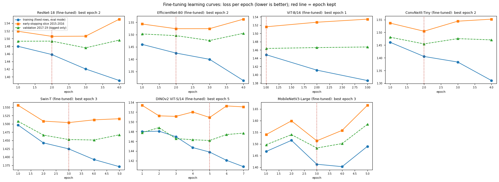
Loss per epoch on fixed training rows, on the 2015 to 2016 early-stopping slice, and on the 2017 to 2019 validation years, which are logged only. The red line marks the epoch kept.
Figure A.2
Convex heads
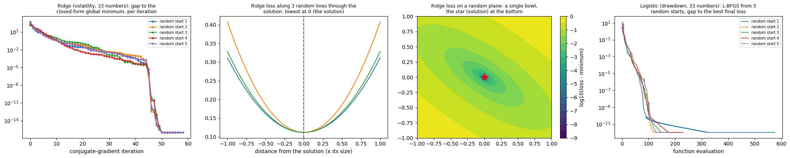
From left: ridge gap to the closed-form minimum from five random starts; ridge loss along random lines through the solution; ridge loss on a random plane; logistic regression from five random starts.
Figure A.3
Boosting curves
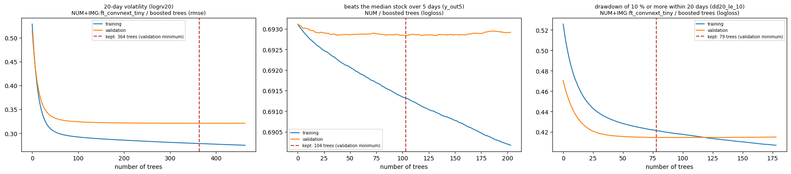
Training and validation loss as trees are added, for volatility, direction and drawdown. The dashed line marks the validation minimum that is kept.
Figure A.4
Loss landscape of the chosen network
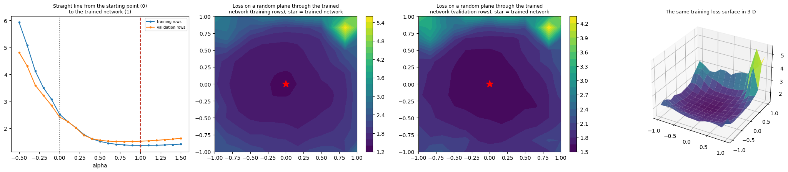
Loss along the straight line from the initial weights (0) to the trained weights (1), then on random filter-normalized planes through the trained weights for training and validation rows, and the training surface in three dimensions.
Figure A.5
All candidates on the test years
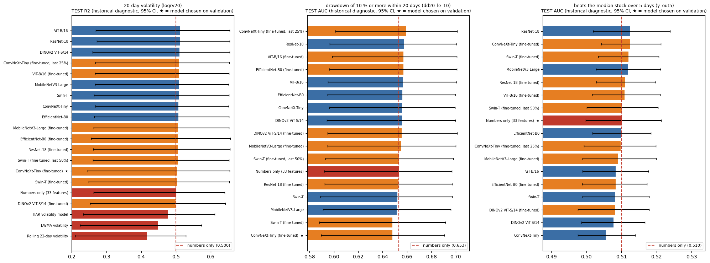
Volatility R² and AUC for drawdown and direction with 95% month-block confidence intervals. Stars mark the models chosen on validation.
Figure A.6
The direction signal
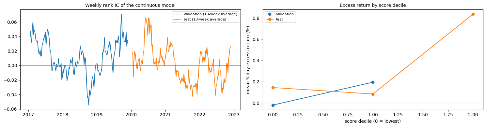
Thirteen-week average of the weekly rank information coefficient of the continuous excess-return model, and excess return by score decile.
Figure A.7
Images alone and single-view gains
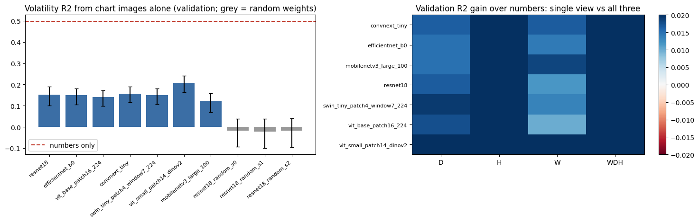
Left: validation volatility R² from images alone, with random-weight controls in grey. Right: validation gain over numbers from single views and all three.